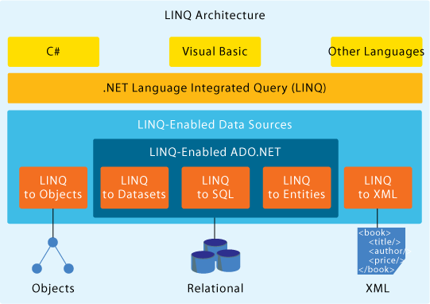

C# - Linq

Instructor: Chris Fulton
Learning Objectives
- What is Linq
- What can you query with Linq?
- What is needed for Linq
What is Linq?
Linq stands for Language Integrated Query. Linq provides methods to easily query data sets including objects, relational databases, XML and other data sources
- Linq can query a variety of data sets that are connected to your application
What can you query?
Arrays, Characters, List of Objects, XML, etc.
Link provides extension methods to IEnumerable
- Where, Order, Group, Select, GetEnumerator
- Click here to navigate to IEnumerable Interface
What's Needed for a Linq Query
- The IEnumerable Interface - utilizing properties and methods from Interface
- A dataset/datasource -
"from acct in accounts" - The formated query -
"where acct.acctBalance > 8000.00" - The Execution of the query -
"Iterating over data using foreach"